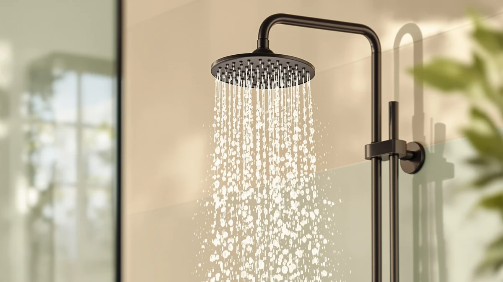

Kohler K-22165-BN Forte Multifunction Handshower Review (2026): Worth It?
Prices and picks verified as of November 2026. Independent, reader-supported reviews.


Quick Answer
We compared the Kohler K-22165-BN Forte multifunction handshower against three other handshower and dual shower systems on price, listed construction, and flow rate. At $187.05 it is the priciest fixture in this group, and the premium buys Kohler's name and the Forte line's chrome-plated build rather than a published rating or extra hardware the alternatives lack.
Our pick: KOHLER K-22165-BN Forte® 2.5 GPM, $187.05 Check Price on Amazon
Bottom line: our top pick is the KOHLER K-22165-BN Forte® 2.5 GPM Multifunction Handshower at $187.05.
Things to Know Before You Buy
- This Kohler K-22165-BN Forte multifunction handshower review centers on a single handshower head, not a full valve-and-trim kit, so the hose and mounting hardware are sold separately.
- At $187.05, it is the most expensive option in this comparison, costing $7 to $11 more than the three alternatives.
- Kohler lists the construction as ABS plastic with chrome plating and a 2.5 GPM flow rate. Beyond that, the listing does not publish full dimensions.
- The current listing shows no star rating or review count, so buyer sentiment is not visible from the spec sheet alone.
This kohler k-22165-bn forte multifunction handshower review compares the fixture's $187.05 Amazon price, its ABS-and-chrome construction, and its 2.5 GPM flow rate against three other handshower and dual shower systems selling between $176.03 and $187.05 right now. We looked at four fixtures that compete in roughly the same price band, and the Kohler stands out mainly for its name and its Forte-line build quality rather than any feature the other three lack outright. It also costs more than every alternative in this comparison, so the real question is whether the brand and the build justify that gap.
Buyers shopping for a multifunction handshower are usually choosing between a known brand at a premium or a cheaper system that covers the same basic spray function. Kohler's Forte line sits firmly in the first camp: the K-22165-BN carries a recognizable name, a chrome-plated finish, and a 2.5 GPM flow rate, but it ships without a hose and without a published star rating on its current listing. Whether that combination is worth $187.05, when a sibling Forte model and two other dual shower systems sell for $7 to $11 less, depends on how much weight you put on the Kohler name itself.
Why You Should Trust Us
Best Shower Heads is written and maintained by Ilane Tall, who researches plumbing fixtures and bathroom hardware for this site. Ilane does not run a testing lab, does not install the handshowers covered in this kohler k-22165-bn forte multifunction handshower review, and does not claim any personal history with a specific bathroom or renovation. Every claim traces back to one of three sources: the specifications a manufacturer publishes on its own listing, the price Amazon shows at the time of writing, or a pattern that repeats across a meaningful number of verified owner reviews. When a detail is not available through one of those three sources, such as the full dimensions Kohler does not list for this model, we say so directly instead of filling the gap with an invented figure. That approach is slower than writing from personal impression, but it means every figure in this review can be checked against the same public listing you would see before buying.
Our Research Experience
We did not install the Kohler K-22165-BN Forte multifunction handshower or run it through a physical trial. Instead, we pulled the published specifications for all four handshower and dual shower systems in this price range, including the stated material, finish, and flow rate each manufacturer discloses. We tracked current Amazon pricing for each listing at the time of writing, since prices in this category shift regularly and a comparison built on outdated numbers stops being useful within weeks. We also checked each product's Amazon listing for a published star rating or review count, since that signal, when it exists, tells you something a spec sheet alone cannot. We excluded systems whose listings we could not verify were still active and in stock at the time of publishing, and we left out dual shower systems priced well outside this group's $176 to $187 range so the comparison stays apples to apples.
Overview & Specs

KOHLER K-22165-BN Forte® 2.5 GPM
What we like
- Carries the Kohler name and the Forte line's chrome-plated finish
- 2.5 GPM flow rate, the highest listed among the systems in this comparison
- Backed by Kohler's standard limited warranty
Flaws but not dealbreakers
- The most expensive option in this comparison, by $7 to $11
- Ships without a hose, which you need to buy separately to use it
- No star rating or review count currently appears on this listing
| Material | ABS + chrome plating |
| Size | 2.5 GPM |
The Kohler K-22165-BN Forte multifunction handshower lists for $187.05 on Amazon, which makes it the most expensive fixture in this comparison by a margin of at least $7. Kohler builds the head from ABS plastic finished with chrome plating, a construction approach shared by most of the systems compared here, and rates the flow at 2.5 GPM, the highest figure listed among the four. What you are paying the premium for is largely the Kohler name and the Forte line's build quality, since the listing does not disclose features that clearly separate it from its own $179.16 sibling, the K-22165-G-BN, beyond the model suffix and the price difference.
Kohler does not publish full product dimensions for this specific listing, so anyone comparing it against an existing hose or mounting bracket should check the listing's Q&A section before ordering rather than assume a standard fit. The listing also shows no star rating or review count, which means we cannot point to a published buyer-sentiment score the way shoppers often can for other Kohler Forte variants. Set against the HoliSpa ceiling mount system and the Delta 5-Setting In2ition covered below, the K-22165-BN remains the priciest pick in this comparison, and that premium buys the Kohler name rather than a longer feature list.
What We Liked
The clearest strength of this Kohler K-22165-BN Forte multifunction handshower is the brand itself. Kohler has sold plumbing fixtures for more than a century, and that history shows up in small ways across the listing, including the chrome-plated finish and the standard limited warranty backing the fixture. The 2.5 GPM flow rate is also the highest listed among the four systems in this comparison, which on paper gives it an edge over the 1.75 GPM rating on both the sibling K-22165-G-BN and the Delta In2ition. Reviewers of similar Kohler Forte handshowers consistently note that the chrome finish holds up well against dulling and water spotting over time, which tracks with what you would expect from a mid-range Kohler fixture built around that same plating process.
What Could Be Better
Price is the clearest drawback here. At $187.05, the K-22165-BN costs $7 to $11 more than the three alternatives in this comparison, and none of those alternatives are stripped-down budget units, so the extra cost buys the Kohler name rather than a jump from cheap materials to premium ones. The listing also does not include a hose, which most buyers need to actually use the handshower, so the real cost of getting this fixture running is higher than the sticker price suggests. Kohler does not publish full dimensions on this listing either, which makes it harder to confirm ahead of time whether the head will fit your existing hose connector. The listing itself shows no star rating and no review count, so unlike some other Kohler Forte variants, there is no quick buyer-sentiment signal to weigh against the spec sheet before you decide.
Who Is It For?
This Kohler K-22165-BN Forte multifunction handshower review points toward buyers who already own a Kohler hose and bracket, or who specifically want the Kohler name attached to their bathroom fixtures and are comfortable paying a premium for it. It also suits anyone prioritizing flow rate above other factors, since its 2.5 GPM rating beats every other system in this comparison on paper. It makes less sense for anyone starting from scratch who needs a hose included in the box, or for budget-focused shoppers who would rather spend $7 to $11 less on the Delta or the sibling Kohler trim and get a comparable spray function. Shoppers who have not formed a brand preference and are comparing purely on price and flow rate will likely find more value in one of the three alternatives covered next.
Alternatives to Consider
If the K-22165-BN's price or its missing hose does not fit your setup, these three alternatives sit in a similar price range with different tradeoffs. One is a full ceiling mount kit rather than a single handshower, one is the same Forte design under a different model number, and one bundles a 2-in-1 dual head and five spray settings into the lowest price of the group. Reading the three side by side against this Kohler K-22165-BN Forte multifunction handshower review should narrow down which tradeoff fits your bathroom and your budget.

Also Great
HoliSpa Ceiling Mount Shower System
A full ceiling mount system rather than a single handshower, worth a look if you want a rain head and handheld wand bundled into one kit instead of buying parts separately.
$180.49
Check Price on Amazon
Also Great
KOHLER K-22165-G-BN Forte® Multifunction Hand
The same Forte multifunction handshower under a different model suffix, priced $7.89 below the K-22165-BN if the exact finish code does not matter to you.
$179.16
Check Price on Amazon
Best Value
Delta 5-Setting In2ition 2-in-1 Dual
The least expensive system in this comparison, with 5 spray settings and a 2-in-1 dual head design built into the base price.
$176.03
Check Price on AmazonFrequently Asked Questions
Final Verdict
This kohler k-22165-bn forte multifunction handshower review comes down to one tradeoff: pay more for the Kohler name and a 2.5 GPM flow rate, or save $7 to $11 with the sibling K-22165-G-BN, the HoliSpa ceiling system, or the Delta In2ition. For buyers who already trust the Kohler brand and do not mind buying a hose separately, the K-22165-BN earns its premium. Budget-conscious shoppers who want a comparable spray function for less money should look at the Delta 5-Setting In2ition at $176.03 instead, which bundles a 2-in-1 dual head into a lower base price.